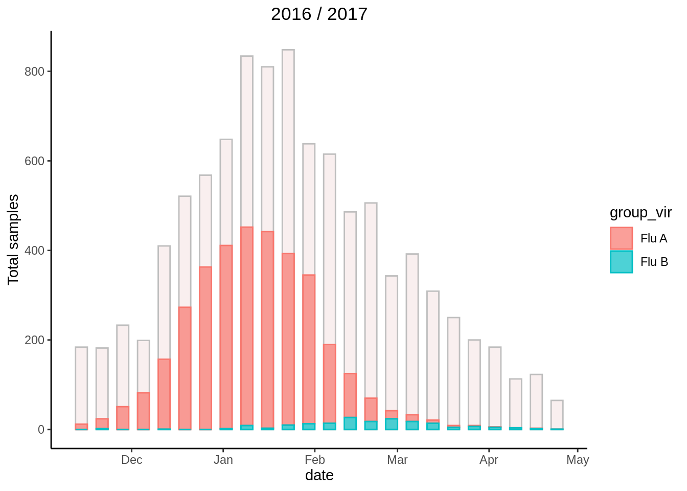

INFIN-ISS
1
Benvenuti
2
Stagione 2012 / 2013
3
Stagione 2013 / 2014
4
Stagione 2014 / 2015
5
Stagione 2015 / 2016
6
Stagione 2016 / 2017
7
Stagione 2017 / 2018
8
Stagione 2018 / 2019
9
Stagione 2019 / 2020
10
Stagione 2020 / 2021
11
Stagione 2021 / 2022
GitHub repository
INFN-ISS
Part 6
Stagione 2016 / 2017
